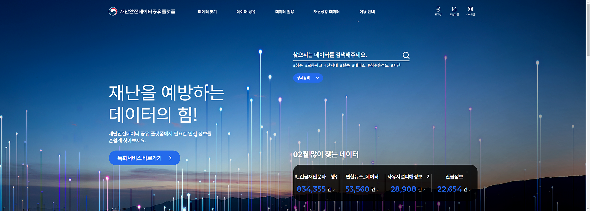

2025.11.18 · 인터뷰안심이 인터뷰 프로젝트: 다양한 사람들은 어떻게 재난에 대비할까?외국인, 발달장애청년, 영유아 동반자 인터뷰를 통해 사람마다 다른 재난 정보 요구를 정리했습니다.본문 읽기
2025.04.27 · 워크샵25년 4월 밋앤핵: 재난 상황, 우리는 무엇을 챙겨 어디로 갈까?재난가방을 물품 목록이 아니라 상황별 준비 경험으로 다시 본 대면 밋앤핵 기록입니다.본문 읽기
2025.02.27 · 미니밋25년 2월 미니밋: 재난안전데이터공유플랫폼행정안전부 재난안전데이터 공유 플랫폼을 주제로 데이터 개방과 시민 활용 가능성을 논의했습니다.본문 읽기
2024.09.22 · 밋앤핵24년 9월 밋앤핵: 재난 안전 공공 데이터와 재난 정보 수요자 탐색하기공공데이터 품질 평가와 재난 정보 수요자 분류를 함께 진행한 활동 기록입니다.본문 읽기